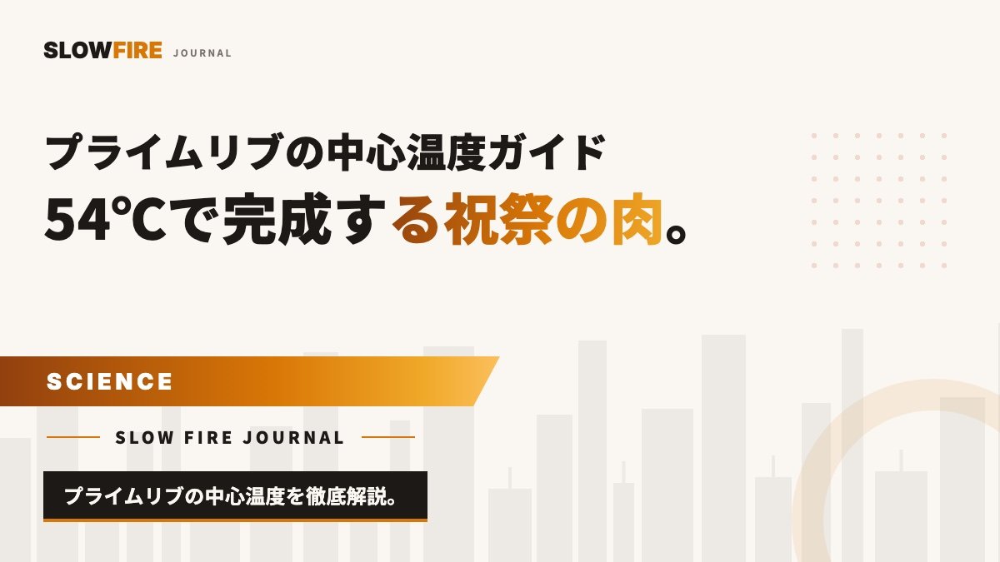

プライムリブの中心温度ガイド。54℃で完成する祝祭の肉
せっかくのプライムリブ、ちょっと焼きすぎてグレーになってしまった——そんな悔しい経験、ありませんか？じつはプライムリブの完成度は、たった1℃で別物になるんです。49℃ならレア、54℃ならミディアムレア、57℃ならミディアム — この3〜4℃の差が、ロゼ色のジューシーさと、グレーで乾いたパサつきを分けます。温度は、焼き加減そのものを語る言語なんですよね。この記事では、プライムリブ特有の温度カーブと、リバースシアでの理想的な火入れ、レスト中の余熱（キャリーオーバー）まで、祝祭の肉を確実に完成させる科学を、一緒に見ていきましょう。

なぜ「1℃」がプライムリブを変えるのか
プライムリブは、料理の世界でも温度のわずかな差が、味の決定的な差に直結する料理のひとつなんです。ブリスケットが92℃で完成する「ほどける肉」だとすれば、プライムリブは54℃で完成する「咲く肉」なんですよね。低温帯でのたった数℃が、見た目も食感もまるごと別物に変えてしまいます。
理由はミオグロビン（筋色素タンパク質）の挙動にあります。50℃を超えると赤色のミオグロビンが酸化し始め、54℃でロゼ色、58℃でピンクグレー、65℃でグレーへと変色していきます。同時にミオシン（筋繊維タンパク質）が変性して、肉汁を抱える力が落ちていきます。温度はそのまま、肉の色と保水力のスイッチなんです。
だから「焼き加減」とは結局、中心温度を何℃で止めるかを決める技術なんですよね。これを時間で判断しようとすると、肉のサイズ・形・初期温度のすべてが変数になって、必ずズレが生まれます。プライムリブの作り方全体についてはプライムリブ完全ガイドとプライムリブとは何かで扱っていますが、ここではこの「温度」だけに絞って、じっくり深掘りしていきますね。
| 項目 | 「時間」で焼く人 | 「温度」で焼く人 |
|---|---|---|
| 判断基準 | 「30分/kgで計算」 | 「中心51℃で引き上げ」 |
| 肉サイズが変わったら | 計算しなおす | 同じ目標値で焼く |
| 初期温度のばらつき | 無視 | 温度上昇で補正 |
| 結果 | レア過ぎ/焼きすぎが頻発 | 毎回ミディアムレア |
3つの目標温度 — 49℃、54℃、57℃
プライムリブで覚えておきたい目標値は、3つだけです。これは「最終的に肉の中で達成したい温度」、つまりレスト後の温度のこと。グリルから引き上げる温度は、これよりマイナス3℃になります（後述のキャリーオーバー分です）。
レア（中心49℃）— 肉の中心がほぼ生温
断面はディープレッドで、ほぼ生の食感です。肉汁が最大限残る一方で、脂の融解が不十分でグニャッとした口当たりになりやすい温度でもあります。ステーキ単品ならレアもありなんですけど、プライムリブ（リブロースト）ではレアは少数派かなと思います。塊で焼くぶん、脂がしっかり融けたほうが旨味が立ってくるんですよね。
ミディアムレア（中心54℃）— もっとも人気の完成点
断面は美しいロゼ色になります。肉汁が滲み、脂は十分に融解して、ミオグロビンの色も最大限きれいに残ります。世界中のステーキハウスの標準がこれなんです。プライムリブの目標値で迷ったら、まずはここを狙ってください。
ミディアム（中心57℃）— 安心感のあるピンク
断面は薄いピンクです。肉汁はやや減りますが、火が確実に通っているので家族向けには安心ですね。「ピンクは欲しいけど、生っぽいのは怖い」という方の着地点かなと思います。62℃を超えるとミディアムウェル、65℃以上でウェルダンになります。プライムリブはこれ以上焼くと、急速に魅力を失ってしまうんですよね。
| 焼き加減 | 最終温度（中心） | 引き上げ温度 | 断面の色 | 食感 |
|---|---|---|---|---|
| レア | 49℃ | 46℃ | ディープレッド | ぐにっと生っぽい |
| ミディアムレア | 54℃ | 51℃ | ロゼ | ジューシー、最も人気 |
| ミディアム | 57℃ | 54℃ | ピンク | しっとり、家族向け |
| ミディアムウェル | 62℃ | 59℃ | 淡いピンク | やや乾燥が始まる |
| ウェルダン | 68℃〜 | 65℃〜 | グレー | プライムリブでは非推奨 |
プライムリブの温度カーブ全体像
3kgのリブローストを120℃低温でローストする場合、中心温度はおおむね以下のように動きます。これは「典型例」であり、肉のサイズ・初期温度・グリル温度で前後しますが、カーブの形は変わりません。
| 経過時間 | 中心温度 | 肉の中で起きていること |
|---|---|---|
| 0分（投入時） | 5〜10℃（冷蔵庫から） | 表面から熱が浸透開始 |
| 30分 | 20℃前後 | たんぱく質はまだ変性していない |
| 60分 | 35℃前後 | 外側からじわじわ赤身が変色 |
| 90分 | 42〜45℃ | ミオグロビンの変色が始まる温度帯 |
| 120分 | 48〜50℃ | レア完成域。ここから1℃が勝負 |
| 140分 | 51〜53℃ | ミディアムレア引き上げポイント |
| 160分 | 54〜56℃ | ミディアム引き上げポイント |
注目してほしいのは、45℃を超えてからの温度上昇が想像以上に速いことです。30〜45℃帯では1時間で15℃上がるのに、50℃を超えると20〜30分で5℃以上も動きます。これは肉の比熱が下がって、外気との温度差が縮まるためなんですよね。「あと5℃」のところからが、いちばん気を抜けないのは、この理由です。
ブリスケットのような長時間料理に比べると、プライムリブは火入れ時間こそ短いものの、温度の感度が極端に高いんです。ブリスケットの中心温度ガイドで説明したコラーゲンの長時間反応とは、まったく別の「速い物語」が進んでいると思ってください。
リバースシアで支配する火入れ
プライムリブを「均一に」「グレーゾーンなく」焼きたいなら、リバースシアが最強の手法です。順序が普通と逆で — 先に低温でじっくり中まで火を入れて、最後に高温で表面だけ焼き付けます。詳しい原理はリバースシアの完全解説を見てみてください。
プライムリブでの実践プロトコルは、次のとおりです。
| フェーズ | グリル温度 | 中心温度ゴール | 所要時間（3kg目安） |
|---|---|---|---|
| ① 低温ロースト | 110〜130℃ | 48℃まで運ぶ | 約2時間 |
| ② インターミッション | グリル外で10分 | 表面の水分を飛ばす | 10分 |
| ③ 高温シア | 250〜300℃ | 表面に焼き色、中心51〜52℃ | 5〜8分 |
| ④ レスト | 室温 | キャリーオーバーで54℃へ | 15〜20分 |
この工程のポイントは、フェーズ①で中心48℃まで運び切ること。グレーゾーン（焼きすぎ層）の原因は、表面と中心の温度差が大きいまま長時間焼かれることなので、低温でゆっくり運ぶほど断面が均一になります。Aaron Franklinが言う「肉のなかで温度の高速道路を作らない」とは、この均一化の話です。
なぜインターミッション（休憩）が要るのか
低温ローストを終えた直後の肉は表面が湿っていて、そのまま高温に投入すると蒸し焼きになってしまい、香ばしいクラストができません。10分ほどグリルの外に置いてあげると、表面の水分が気化して乾き、最後のシアでメイラード反応が美しく決まります。10分の静寂が、クラストを作ってくれるんですよね。これはプライムリブ特有の、繊細な工程です。
キャリーオーバー — レスト中に2〜4℃上がる
「焼き終わった瞬間が完成」と思っていると、プライムリブはほぼ確実に焼きすぎになってしまいます。グリルから取り出したあとも、外側に蓄えられた熱が中心に向かって伝わり続けて、中心温度はまだ上昇していきます。これがキャリーオーバークッキングです。
| レスト経過時間 | 中心温度の変化 | 肉の中で起きていること |
|---|---|---|
| 引き上げ直後 | 51℃ | 表面に肉汁が押し出されている |
| 5分後 | 53℃ | 外側の熱が内部へ伝導 |
| 10分後 | 54℃（ピーク） | キャリーオーバー終了 |
| 15分後 | 53℃ | 下降開始、肉汁が繊維に再吸収 |
| 20分後 | 51〜52℃ | カット適温に |
キャリーオーバーの上昇幅は、肉塊が大きいほど大きくなります。500gのステーキなら1〜2℃、3kgのリブローストなら3〜5℃、6kgの巨大リブロースなら5〜7℃ほど上がります。家族用の大きめのプライムリブを焼くなら、マイナス4℃で引き上げるくらいの覚悟があるといいですよ。
カットするのは、ピーク温度を過ぎて中心が下がり始め、51〜52℃で安定したタイミングです。これより熱いと肉汁が一気に流れ出してしまいますし、これより冷たいと脂が固まって口当たりが悪くなります。15分レストが、プライムリブの黄金時間なんですよね。
温度計の刺し方と位置の科学
プライムリブは内部構造が不均一です。骨、脂の層、結合組織、赤身 — それぞれ熱伝導率が違うので、プローブの位置で表示温度は簡単に2〜3℃変わります。
- 刺す場所：骨と脂を避けた、赤身部分の最も厚いところの中央
- 刺す方向：肉の長手方向に沿って横から、または上から垂直に
- 刺す深さ：中心まで届くこと（プローブの長さの2/3程度が肉に入る感覚）
- 誤検出を避ける：複数箇所に刺して最低値を採用
骨に近づくと温度が高めに出やすく、脂に当たると低めに出やすいんですよね。同じ肉でも、プローブをずらすだけで45℃にも55℃にもなり得る——これがプライムリブの怖いところです。Wi-Fi温度計（Meater Plusや Inkbird IBT-26S など）を使えば、刺したまま放置して連続モニタリングできるので、リブロースト級のサイズではほぼ必須の道具になります。
プライムリブで使う牛肉については、アメリカンビーフの基礎知識で部位や格付けを解説しています。USDA Choice以上なら脂の入り方が美しく、温度カーブも安定します。
失敗パターン3つと対策
SLOW FIREがワークショップで観察してきた、プライムリブ失敗の99%は以下の3つに集約されます。
失敗パターン①：レストを軽視して、ピーク温度で切る
「54℃に達した！」と興奮して、すぐにカットしてしまう。じつは肉の中で熱はまだ伝導している最中で、断面はおいしく見えても、5分後にまな板を見ると肉汁が大量に流れ出している——よくあるケースです。だからこその15分のレスト。これを「待つ」ではなく「完成させる」と捉え直してあげてください。
失敗パターン②：引き上げ温度を高く取りすぎる
「ミディアムレア＝54℃」と覚えてしまって、グリルでも54℃まで焼いてしまう。すると、キャリーオーバーで57℃まで上がって、結果はミディアム寄りになってしまうんですよね。引き上げは目標値マイナス3℃。3kg超なら、念のためマイナス4℃で攻めるのが安全です。
失敗パターン③：シア（焼き付け）で過剰加熱
リバースシアの最後で「もっと色を付けたい」と長くシアしすぎて、中心が一気に60℃を超え、ミディアムウェルに突入してしまう。これもよくある失敗です。シアは1面30〜60秒×全面、総時間で5〜8分以内に収めてあげてください。色を追いすぎると、肉の中では取り返しがつかなくなってしまうんですよね。
温度計と対話する力は、プライムリブを通じて確実に磨かれます。ここで身につけた感覚は、ブリスケットの中心温度でも、ステーキでも、ローストポークでも、すべての肉料理に応用できる「身体知」になります。BBQが日常になるとは、温度計が言葉になるということです。
CONCLUSION
結論
プライムリブの中心温度は、レア49℃、ミディアムレア54℃、ミディアム57℃。引き上げはすべてマイナス3℃。低温でゆっくり中心を運び、最後に高温で表面だけ焼き、15分レストで完成させる — リバースシアのこの3層構造が、プライムリブを最も美しく仕上げる科学です。
祝祭の日に焼く肉だからこそ、運任せにせず、温度で支配してあげたいですよね。レシピ全体はプライムリブ完全ガイド、リブローストの歴史と文化はプライムリブとは何か、原料選びはアメリカンビーフの基礎知識で、それぞれ深掘りしています。温度がわかれば、祝祭はちゃんと再現できます。
FAQ
プライムリブの温度管理についてよくある質問
プライムリブの中心温度は何℃が正解ですか？
焼き加減によって変わります。レア49℃、ミディアムレア54℃、ミディアム57℃、ミディアムウェル60℃が目安です。最も人気なのはミディアムレアで、ロゼ色の断面と肉汁のバランスがもっとも美しく出ます。これは「最終的に達してほしい温度」なので、引き上げる瞬間はマイナス3℃で取り出してくださいね。
リバースシアはプライムリブにも使えますか？
むしろプライムリブこそリバースシアの真骨頂です。120℃前後の低温で中心48℃まで運び、最後に高温で表面だけ焼き付ける。これにより、肉全体が均一なロゼ色になり、グレーゾーン（焼きすぎ層）がほぼゼロになります。
レスト中に温度はどれくらい上がりますか？
キャリーオーバーで2〜4℃上昇します。3kg超のリブローストなら3〜5℃ほどです。51℃で取り出しても、レスト10分でピーク54〜55℃に達します。15分レストでカット適温の51〜52℃に戻ります。
温度計はどこに刺すのが正解ですか？
骨と脂を避けた、赤身の最も厚い場所の中央が基準点です。複数箇所に刺して最低値を採用するのが安全ですね。Wi-Fi温度計を使えば刺したまま連続モニタリングできるので、リブロースト級のサイズではほぼ必須です。
薄い側と厚い側で温度差が出ます。どうすれば？
正常な現象です。薄い側を低温ゾーンに向ける、アルミホイルで覆って熱を遮る、もっとも厚い場所を基準に焼くなどで対応できます。家族で焼き加減の好みが分かれる場合、むしろ温度差は歓迎すべき結果です。
PERFECT WITH
プライムリブにおすすめのラブ
54℃で完成するロゼの肉を、シンプルに引き立てるビーフ系ラブ